LLMs are becoming larger and larger, and it becomes more and more difficult to adapt them : they are in the hand of a few privileged companies. This is why some research has increased in the last few months on how to allow adapting those models with “acceptable” (financially speaking) resources. I am presenting here my readings & implementations of some methods allowing to adapt those very big LLMs in an accessible way.
First of all, I have recently read and tested LoRA fine-tuning method, which comes from the paper LORA: LOW-RANK ADAPTATION OF LARGE LANGUAGE MODELS (Hu et al.). LoRA is a very interesting fine-tuning method which is allowing us to fine-tune LLMs (up to 2-3B parameters) on a single A100 GPU - 40GB. Instead of updating all the parameters of the model during fine-tuning, LoRA uses only a small set of trainable parameters (called “adapters”), and so not updating the full model parameters which remain fixed: I will try to explain you how it works in this post.
Also, I recently read and tested QLoRA fine-tuning method, which is adding quantization to LoRA fine-tuning method, which comes out from the paper QLORA: Efficient Finetuning of Quantized LLMs. QLoRA is all the more interesting that it can allow us to fine-tune 40B models on a single A100 GPU (of 40GB)!
I found this image to be the best introdocution of these methods:
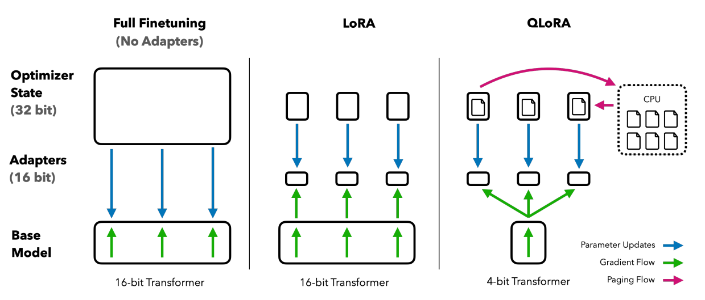
(Source: https://arxiv.org/pdf/2305.14314.pdf)-
Full fine-tuning is the process by which we pass data through a pretrain network and then we update the weights of this pretrain network in the backpropagation process.
-
With LoRA, the fine-tuning process is a bit different: LoRA fine-tuning does not change the weights within the base model; it is changing the values of some “adapters” only, which are those small rectangles on the image above, corresponding to a reduction of the weight update matrix.
-
In QLoRA fine-tuning, the memory is even more optimized: the adapters is updated with the gradient calculated from the 4-bit base model, and the optimizer states are stored in cpu, to optimize all the more the GPU memory. QLoRA is has been implemented to allow everyone to run very large models on a single GPU.
General overview of how LoRA works
LoRA is a new fine-tuning method. To understand how it works, let’s start with a reminder of how traditional fine-tuning is working. Traditional fine-tuning is the process by which we pass data through a pretrain network and then we update the weights of this pretrain network in the backpropagation process. So it is just like training but starting from a pretrain model. We can actually represent this fine-tuning process differently:
1. Isolation of the weight updates into 1 matrix
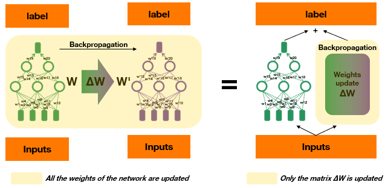
We can represent fine-tuning by having our frozen pretrain weights, pass data through it, and then we constantly update the weight update (∆W) matrix. Then, they (pretrained weights W & weight update ∆W) recombine at the final step (output). All in all, here we keep track of it separately.2. Decomposition of the weight update matrix
Pretrain models have very low intrinsic dimension: they can be described as accurately (or almost as accurately) using way less dimensions than they have. Since pretrain models have lower intrinsic dimension, the paper hypotheses that the weights also have low intrinsic rank during adaptation. So it means that we don’t need all the dimensions to describe all that’s going on during fine-tuning. The rank of a matrix isn’t always equal to its dimension: it is equal to the number of linearly independent rows of columns. So a matrix might be 100 x 100, but it might have a rank of 10 or even less. Because of that, we can apply the process of matrix decomposition to represent the large matrix a combination of smaller matrixes.
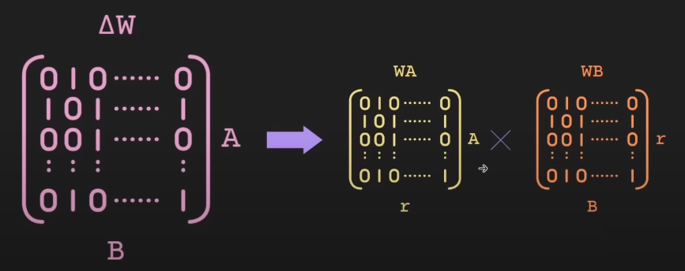
(Source: https://www.youtube.com/watch?v=dA-NhCtrrVE&t=601s) So here, WA & WB are much smaller than the original matrix: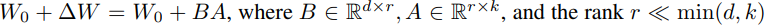
All in all, we have represented the ∆W update weight matrix into 2 smaller matrixes, which means that we do not have to care about the whole ∆W matrix: we only handle the 2 small WA & WB matrixes for fine-tuning. In the fine-tuning process, we thus do small ingestion in the pretrain model!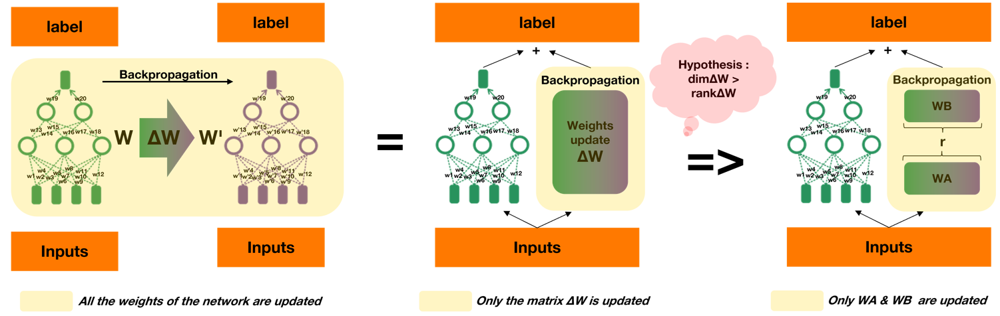
The rank r is a hyperparameter: it means we can have up to rank r. This is how the process goes: we make the combination (between pretrained weights & low rank matrixes) after the data go through it. It comes down to a “simple” addition: label = W(input) + WAWB Thanks to this method, we can accelerate the fine-tuning process of large models and consume less memory while fine-tuning.3. Reconstruction of the model at inference
At inference time (after the model has been fine-tuned, when we want to use the model to make predictions), we can recombine the pretrained weights with WA & WB:
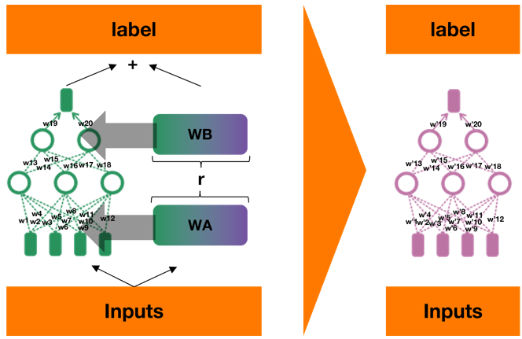
4. Application to LLMs
In LLMs, we only compute weight modifications on attention weight with LoRA. So WA & WB will only represent attention weights modifications. The rest of the architecture of the transformer remains unchanged. More precisely, they focus on the q & v of attention (query & value). So we have Wq & Wv rather than WA & WB. But it is possible to focus on more weights. Here is a image from LoRA paper representing the accuracy depending on the weight type of the model chosen (Wq and Wv being respectively query & value attention weights) and on the rank of the weight matrixes chosen:
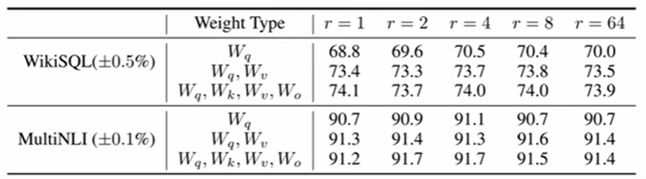
(Source: https://arxiv.org/pdf/2106.09685.pdf) We see that there is no need for very high rank: the intrinsic rank of the weight matrix is potentially super low. Moreover, if we only focus on Wq & Wv as reduction matrixes for the weight matrix update ∆W, we get very good accuracy with r=1, and the best one with r=8. WikiSQL and MultiNLI are the datasets on which the validation accuracy has been computed. The model fine-tuned here is GPT3-175M.Conclusion
VRAM during training reduction
72% less VRAM consumption for training GPT3 175B parameters with r=4 : from 1.2TB to 350GB.
Checkpoint size reduction
For r=4, reduction of 10 000x of the checkpoint size (for instance, fine-tuning GPT3-OPT 175B will generate a checkpoint of 35MB rather than 350GB)
Faster training
25% speedup during training
Go further…
This method opens many possibilities, mainly at inference. If we come back to what LoRA method, it all comes down to pass the model to the pretrain one, and just add WAWB to the whole. It means that we could have several versions on the model depending on the task we want to apply to the model. Rather than having different models, we could have only 1 (the pretrained one) and then add the WAWB corresponding to each task to the pretrained model applied to an input to get the label. All in all, all we have to do to switch between tasks is to replace WAWB:
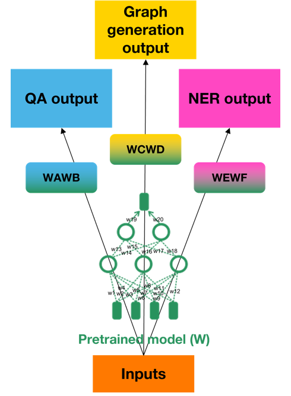
Test LoRA fine-tuning
We will use the peft library from Huggingface (https://huggingface.co/blog/peft). It is the parameter-efficient fine-tuning library, which gives us access to LoRA fine-tuning method. LoRA is a specific method of peft, which allows to have access to many other parameter-efficient fine-tuning methods (such as suffix-tuning, …).
Install dependencies
The requirements.txt must be composed as follows:
git+https://github.com/huggingface/peft.git git+https://github.com/huggingface/transformers bitsandbytes datasets accelerate loralib
Load model – example of bloom-3b
As you do traditionally to load a model from huggingface (here, we will load the model with weights of float 16 precision rather than float32 not save memory):
from transformers import AutoModelForCausalLM, AutoTokenizer
model = AutoModelForCausalLM.from_pretrained(
"bigscience/bloom-3b",
torch_dtype=torch.float16
)
tokenizer = AutoTokenizer.from_pretrained("bigscience/tokenizer")
Print model to know which weight matrixes we want to decompose
In the paper, they advise to chose Wq & Wv. In bloom, we can see that we do have the query_key_value module:
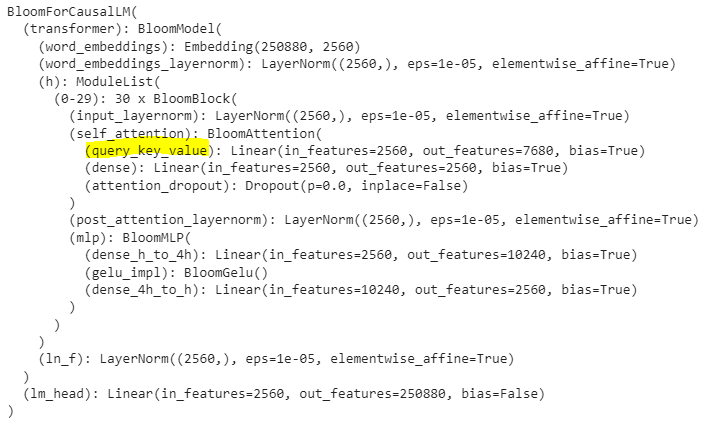
But the name of the module might be different depending on models architecture! Example of cerebras model: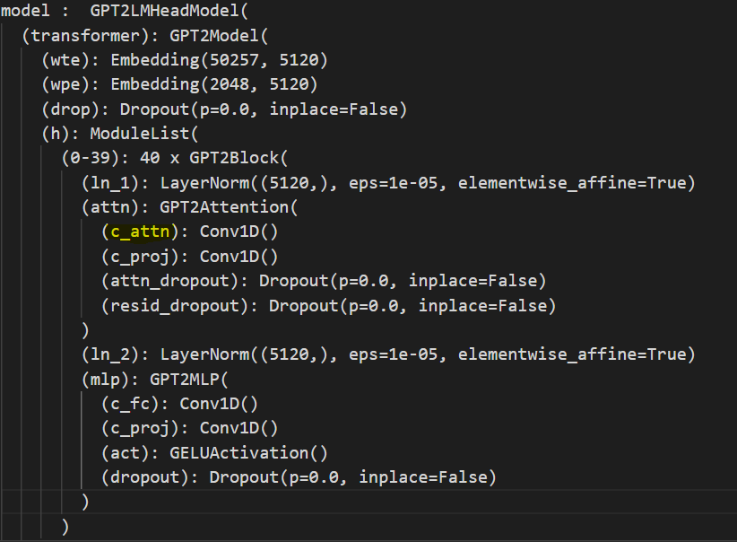
This is why we have built a TRANSFORMERS_MODELS_TO_LORA_TARGET_MODULES_MAPPING to get the target_module name depending on the model architecture.TRANSFORMERS_MODELS_TO_LORA_TARGET_MODULES_MAPPING = {
"t5": ["q", "v"],
"mt5": ["q", "v"],
"bart": ["q_proj", "v_proj"],
"gpt2": ["c_attn"],
"bloom": ["query_key_value"],
"blip-2": ["q", "v", "q_proj", "v_proj"],
"opt": ["q_proj", "v_proj"],
"gptj": ["q_proj", "v_proj"],
"gpt_neox": ["query_key_value"],
"gpt_neo": ["q_proj", "v_proj"],
"bert": ["query", "value"],
"roberta": ["query", "value"],
"xlm-roberta": ["query", "value"],
"electra": ["query", "value"],
"deberta-v2": ["query_proj", "value_proj"],
"deberta": ["in_proj"],
"layoutlm": ["query", "value"],
"llama": ["q_proj", "v_proj"],
"chatglm": ["query_key_value"],
"starcoder": ["c_attn"],
"falcon": ["query_key_value"],
"cerebras": ["c_attn"]
}
Apply LoRA to the model
from peft import LoraConfig, get_peft_model
config = LoraConfig(
r=8,
lora_alpha=16,
target_modules=["query_key_value"],
lora_dropout=0.05,
bias="none",
task_type="CAUSAL_LM"
)
model = get_peft_model(model, config)
Here, we first select our rank (here, we chose a rank 8). Then, the target_module will be the weight matrix we want to decompose. This is the only module we will update (on which we will inject things).
Load & preprocess the data for fine-tuning on QA task
We will fine-tune our model on the squad_v2 dataset, which is composed of contexts, questions and answers. To get a better idea on how the squad_v2 dataset works: https://huggingface.co/datasets/squad_v2 So here, we want the model to learn this structure:
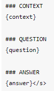
The code to preprocess the data in this way:
from datasets import load_dataset
qa_dataset = load_dataset("squad_v2")
def create_prompt(context, question, answer):
if len(answer["text"]) < 1:
answer = "Cannot Find Answer"
else:
answer = answer["text"][0]
prompt_template = f"### CONTEXT\n{context}\n\n### QUESTION\n{question}\n\n### ANSWER\n{answer}</s>"
return prompt_template
mapped_qa_dataset = qa_dataset.map(lambda samples: tokenizer(create_prompt(samples['context'], samples['question'], samples['answers'])))
Train the model
We include the model, and train it on 100 steps. If we want to train the model on 1 or more epochs, we can replace “max_steps=100” with “num_train_epochs=1”. Since we loaded the model with a precision of floating point 16, we need to add fp16=True.
from transformers import TrainingArguments, Trainer, DataCollatorForLanguageModeling
trainer = Trainer(
model=model,
train_dataset=mapped_qa_dataset["train"],
args=TrainingArguments(
per_device_train_batch_size=4,
gradient_accumulation_steps=4,
warmup_steps=100,
max_steps=100,
learning_rate=1e-3,
fp16=True,
logging_steps=1,
output_dir=f"qlora_{model_id.split('/')[-1]}_finetuned_for_penman_generation",
),
data_collator=DataCollatorForLanguageModeling(tokenizer, mlm=False)
)
model.config.use_cache = False # silence the warnings. Please re-enable for inference!
trainer.train()
Inference with the model
import torch
from peft import PeftModel, PeftConfig
from transformers import AutoModelForCausalLM, AutoTokenizer
peft_model_id = "lora_fine-tuned_model"
config = PeftConfig.from_pretrained(peft_model_id)
model = AutoModelForCausalLM.from_pretrained(config.base_model_name_or_path, return_dict=True, load_in_8bit=False, device_map='auto')
tokenizer = AutoTokenizer.from_pretrained(config.base_model_name_or_path)
# Load the Lora model
qa_model = PeftModel.from_pretrained(model, peft_model_id)
What’s very interesting here, is that is model is loaded with first the load of the original model, and then the load of the LoRA model. The LoRA model is not heavy at all: a few MB, so it is easily storable. Let’s imagine we have another model (for graph generation from text for instance), we can load the model just doing:
graph_generation_model = PeftModel.from_pretrained(model, peft_graph_generation_model_model_id)
Then, you can build a function to process the context / question in the expected format:
from IPython.display import display, Markdown
def make_inference(context, question):
batch = tokenizer(f"### CONTEXT\n{context}\n\n### QUESTION\n{question}\n\n### ANSWER\n", return_tensors='pt')
with torch.cuda.amp.autocast():
output_tokens = qa_model.generate(**batch, max_new_tokens=200)
display(Markdown((tokenizer.decode(output_tokens[0], skip_special_tokens=True))))
And just run it!
context = input("context: ")
question = input("question: ")
make_inference(context, question)
General overview of how QLoRA works
What is quantization?
Quantization is the process of discretizing an input from a representation that holds more information to a representation with less information. It usally means converting a data to fewer bits, ie from 32-bit floats to 8-bit integers.
How does it works? What does it means to convert data from 32-bits to 8-bit?
- First, when quantizing data, you can choose the range of values that the data will be mapped to (what will be the minimum & maximum values the data can take after quantization?)
- Then, when quantizing the data, you chose the precision to which you want to quantize your values (2bits, …, 8bits, …)
- Finally, to ensure that the entire range of the low-bit data type is used, the input data type is commonly rescaled into the target data type range through normalization by the absolute maximum of the input elements, which are usually structured as a tensor.
For example, quantizing a 32-bit Floating Point (FP32) tensor into a Int8 tensor with range [−127, 127] will result into the following:
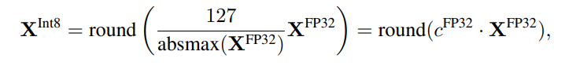
How does quantization applies in QLoRA?
In QLoRA, the base-model (“foundation model”) is loaded directly as a 4-bit model (converting all its weights to 4-bit precision weights). Thus, the adapters (weight update matrix) is updated with the gradient calculated from the 4-bit base model, as opposed to what we do in traditional LoRA, which is calculating the gradient from a 16-bits model (1/4 less precision). So, to sum-up, in QLoRA:
- The gradient is computed from a 4-bit model
- Like for LoRA, the gradient is not pushed during backpropagation into the base-model (here, for QLoRA, the base-model is a 4-bit model): the gradient is pushed during backpropagation into the LoRA weight update (∆W) matrix.
In QLoRA, the memory is all the more optimized that the optimizer states are stored in cpu (this process is called : “Paged Optimizers”), to optimize all the more the GPU memory. QLoRA is has been implemented to allow everyone to run very large models on a single GPU. The optimizer state is all the intermediate values calculated for the backpropagation and that need to be stored to push the gradient backward.
To note: there are several experiments in the reduction of the precision of the weights in QLoRA: 8-bit Integer (Int8) vs 4-bit Float (FP4) vs 4- bit NormalFloat (NF4).
Performances of QLoRA
The paper QLORA: Efficient Finetuning of Quantized LLMs shows that this method is not degrading the performance of LLMs in traditional tasks :
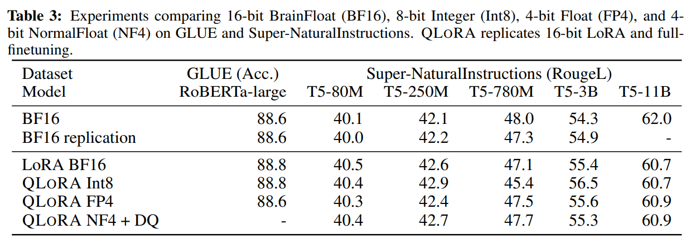
Indeed, the papers’s result shows that 4-bit QLORA matches 16-bit full finetuning and 16-bit LoRA finetuning performance on academic benchmarks (GLUE & Supr-NaturalInstructions (ROugeL)).Test QLoRA fine-tuning
I will show you as example how to fine-tune falcon40B on PENMAN representation of sentences. Here, the model takes as input a sentence and returns its corresponding PENMAN representation. THe model should thus learn the following structure:
### SENTENCE
"# ::snt As we predicted , Route 288 is generating residential development in scarcely populated areas all around its exits , overtaxing the local country roads ."
### PSEUDO_PENMAN
"( generate-01 :ARG0 ( road_0 :name ( name :op1 \"Route\" :op2 288 ) :part ( exit ) ) :ARG1 ( develop-02 :ARG1 ( residence ) :location ( area :ARG1-of ( populate-01 :mod ( scarce ) ) :location ( around :op1 exit :mod ( all ) ) ) :ARG0-of ( overtax-01 :ARG2 ( road_1 :ARG1-of ( local-02 :ARG2 ( country ) ) ) ) ) :ARG1-of ( predict-01 :ARG0 ( we ) ) )"
Training environment
I will show you how to fine-tune this model on this task using Google Colab (premium) with a single A100 GPU (40GB).
Install dependencies
!pip install -q bitsandbytes datasets accelerate loralib evaluate einops
!pip install -q git+https://github.com/huggingface/peft.git git+https://github.com/huggingface/transformers.git
Import required libraries
import argparse
import logging
import math
import os
import sys
from dataclasses import dataclass, field
from itertools import chain
from typing import Optional
import datasets
import torch
from datasets import load_dataset
import transformers
from transformers import (
MODEL_FOR_CAUSAL_LM_MAPPING,
AutoModelForCausalLM,
AutoTokenizer,
Trainer,
TrainingArguments,
default_data_collator,
set_seed,
)
from transformers.testing_utils import CaptureLogger
from transformers.trainer_utils import get_last_checkpoint
from transformers import BitsAndBytesConfig
from peft import prepare_model_for_kbit_training
from peft import LoraConfig, get_peft_model
import json
Load the model as a 4-bit model & configure LoRA (with the right adapter matrix: here query / value for attention modules)
TRANSFORMERS_MODELS_TO_LORA_TARGET_MODULES_MAPPING = {
"t5": ["q", "v"],
"mt5": ["q", "v"],
"bart": ["q_proj", "v_proj"],
"gpt2": ["c_attn"],
"bloom": ["query_key_value"],
"blip-2": ["q", "v", "q_proj", "v_proj"],
"opt": ["q_proj", "v_proj"],
"gptj": ["q_proj", "v_proj"],
"gpt_neox": ["query_key_value"],
"gpt_neo": ["q_proj", "v_proj"],
"bert": ["query", "value"],
"roberta": ["query", "value"],
"xlm-roberta": ["query", "value"],
"electra": ["query", "value"],
"deberta-v2": ["query_proj", "value_proj"],
"deberta": ["in_proj"],
"layoutlm": ["query", "value"],
"llama": ["q_proj", "v_proj"],
"chatglm": ["query_key_value"],
"starcoder": ["c_attn"],
"falcon": ["query_key_value"]
}
# instantiate training args (update the max_steps to "num_train_epochs=1" or more, here it was just for testing purposes)
model_type = "falcon"
model_id = "tiiuae/falcon-40b"
matrix_order = 8
training_args = TrainingArguments(
auto_find_batch_size=True,
gradient_accumulation_steps=1,
max_steps=1000,
logging_steps=1,
learning_rate=2e-5,
fp16=True,
save_total_limit=4,
output_dir=f"./{model_id.split('/')[-1]}_qlora_finetuned",
save_strategy='epoch',
optim="paged_adamw_8bit",
lr_scheduler_type = 'cosine',
warmup_ratio = 0.05,
)
def read_data(file_path):
data = []
with open(file_path, 'r') as f:
for line in f:
try:
data.append(json.loads(line))
except json.JSONDecodeError as e:
print(f'Error parsing JSON for line: {line}')
print(f'Error: {str(e)}')
return data
# Setup logging
logger = logging.getLogger(__name__)
logging.basicConfig(
format="%(asctime)s - %(levelname)s - %(name)s - %(message)s",
datefmt="%m/%d/%Y %H:%M:%S",
handlers=[logging.StreamHandler(sys.stdout)],
)
log_level = training_args.get_process_log_level()
logger.setLevel(log_level)
datasets.utils.logging.set_verbosity(log_level)
transformers.utils.logging.set_verbosity(log_level)
transformers.utils.logging.enable_default_handler()
transformers.utils.logging.enable_explicit_format()
# Log on each process the small summary:
logger.warning(
f"Process rank (distributed): {training_args.local_rank}, device: {training_args.device}, n_gpu: {training_args.n_gpu}"
+ f"distributed training: {bool(training_args.local_rank != -1)}, 16-bits training: {training_args.fp16}"
)
# Detecting last checkpoint.
last_checkpoint = None
if os.path.isdir(training_args.output_dir) and not training_args.overwrite_output_dir:
last_checkpoint = get_last_checkpoint(training_args.output_dir)
if last_checkpoint is None and len(os.listdir(training_args.output_dir)) > 0:
raise ValueError(
f"Output directory ({training_args.output_dir}) already exists and is not empty. "
"Use --overwrite_output_dir to overcome."
)
elif last_checkpoint is not None and training_args.resume_from_checkpoint is None:
logger.info(
f"Checkpoint detected, resuming training at {last_checkpoint}. To avoid this behavior, change "
"the `--output_dir` or add `--overwrite_output_dir` to train from scratch."
)
# Load data
train_data = read_data('train.txt')
validation_data = read_data('test.txt')
# Set seed before initializing model.
set_seed(training_args.seed)
# initializing tokenizer
tokenizer = AutoTokenizer.from_pretrained(model_id)
# initializing model
## quantization
bnb_config = BitsAndBytesConfig(load_in_4bit=True, bnb_4bit_use_double_quant=True, bnb_4bit_quant_type="nf4", bnb_4bit_compute_dtype=torch.bfloat16)
model = AutoModelForCausalLM.from_pretrained(model_id, quantization_config=bnb_config, device_map={"":0}, trust_remote_code=True)
model.gradient_checkpointing_enable()
model = prepare_model_for_kbit_training(model)
## adapt model for LORA
loraconfig = LoraConfig(
r=matrix_order,
lora_alpha=32,
target_modules=TRANSFORMERS_MODELS_TO_LORA_TARGET_MODULES_MAPPING[model_type],
lora_dropout=0.05,
bias="none",
task_type="CAUSAL_LM"
)
model = get_peft_model(model, loraconfig)
Prepare the data
Here, the data are stored in a text.txt file.
tokenizer.pad_token = tokenizer.eos_token
def create_prompt(snt, pseudo_penman):
prompt_template = f"### SENTENCE\n{snt}\n\n### PSEUDO_PENMAN\n{pseudo_penman}</s>"
return prompt_template
def process_sample(sample):
# Create your prompt here
prompt = create_prompt(sample['snt'], sample['pseudo_penman'])
# Encode the prompt
return tokenizer(prompt, return_token_type_ids=False)
mapped_train_dataset = list(map(process_sample, train_data))
mapped_validation_dataset = list(map(process_sample, validation_data))
Train the model using the huggingface Trainer
# Initialize our Trainer
trainer = Trainer(
model=model,
train_dataset=mapped_train_dataset,
eval_dataset=mapped_validation_dataset,
args=training_args,
tokenizer=tokenizer,
data_collator=transformers.DataCollatorForLanguageModeling(tokenizer, mlm=False)
)
# Training
checkpoint = None
if training_args.resume_from_checkpoint is not None:
checkpoint = training_args.resume_from_checkpoint
elif last_checkpoint is not None:
checkpoint = last_checkpoint
model.config.use_cache = False
trainer.train(resume_from_checkpoint=checkpoint)
trainer.save_model()
trainer.save_state()
model.config.to_json_file(f"qlora_{model_id.split('/')[-1]}_finetuned_for_penman_generation/config.json")
Then, save the model on your local machine.
Make inference with the model
Here, the test data is stored in a test.txt file.
import torch
from peft import PeftModel, PeftConfig
from transformers import AutoModelForCausalLM, AutoTokenizer
model_id = "tiiuae/falcon-40b"
peft_model_id = "qlora_falcon40b_finetuned_for_penman_generation"
config = PeftConfig.from_pretrained(peft_model_id)
bnb_config = BitsAndBytesConfig(load_in_4bit=True, bnb_4bit_use_double_quant=True, bnb_4bit_quant_type="nf4", bnb_4bit_compute_dtype=torch.bfloat16)
model = AutoModelForCausalLM.from_pretrained(model_id, quantization_config=bnb_config, device_map={"":0}, trust_remote_code=True)
#model = AutoModelForCausalLM.from_pretrained(config.base_model_name_or_path, return_dict=True, load_in_8bit=True, device_map={"":0})
tokenizer = AutoTokenizer.from_pretrained(config.base_model_name_or_path)
# Load the Lora model
amr_model = PeftModel.from_pretrained(model, peft_model_id)
# Set pad token
if not tokenizer.pad_token:
tokenizer.pad_token = tokenizer.eos_token
# Inference
def make_inference(line):
snt = line["snt"]
batch = tokenizer(f"### SENTENCE\n{snt}\n\n### PSEUDO_PENMAN\n", return_tensors='pt', truncation=True, padding='longest')
# Note: Remove the token_type_ids from the input.
del batch["token_type_ids"]
with torch.cuda.amp.autocast():
output_tokens = amr_model.generate(input_ids=batch['input_ids'], attention_mask=batch['attention_mask'], max_length=200)
line["pred_penman"] = tokenizer.decode(output_tokens[0], skip_special_tokens=True)
with open("final_data.txt", 'w') as fichier:
fichier.write(json.dumps(line))
fichier.write('\n')
def read_data(file_path):
data = []
with open(file_path, 'r') as f:
for line in f:
try:
data.append(json.loads(line))
except json.JSONDecodeError as e:
print(f'Error parsing JSON for line: {line}')
print(f'Error: {str(e)}')
return data
for line in read_data("test.txt"):
make_inference(line)
Here, you will have a final_data.txt with the penman generation of the fine-tuned model!